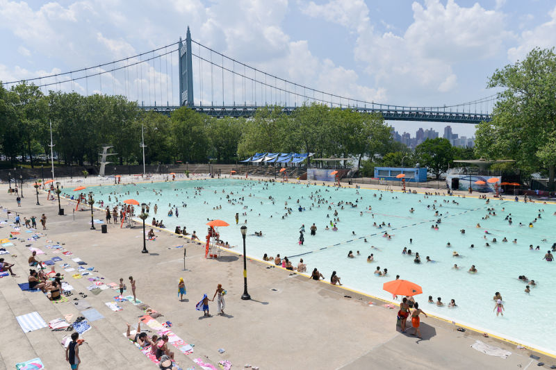
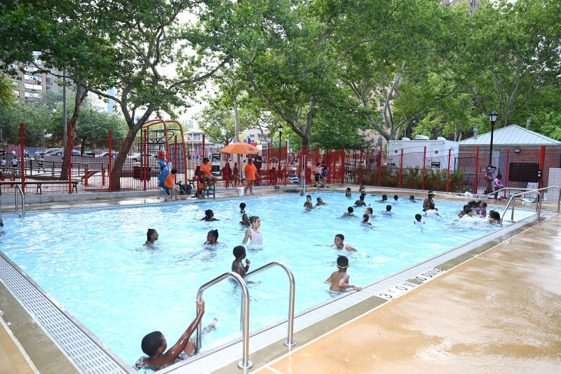
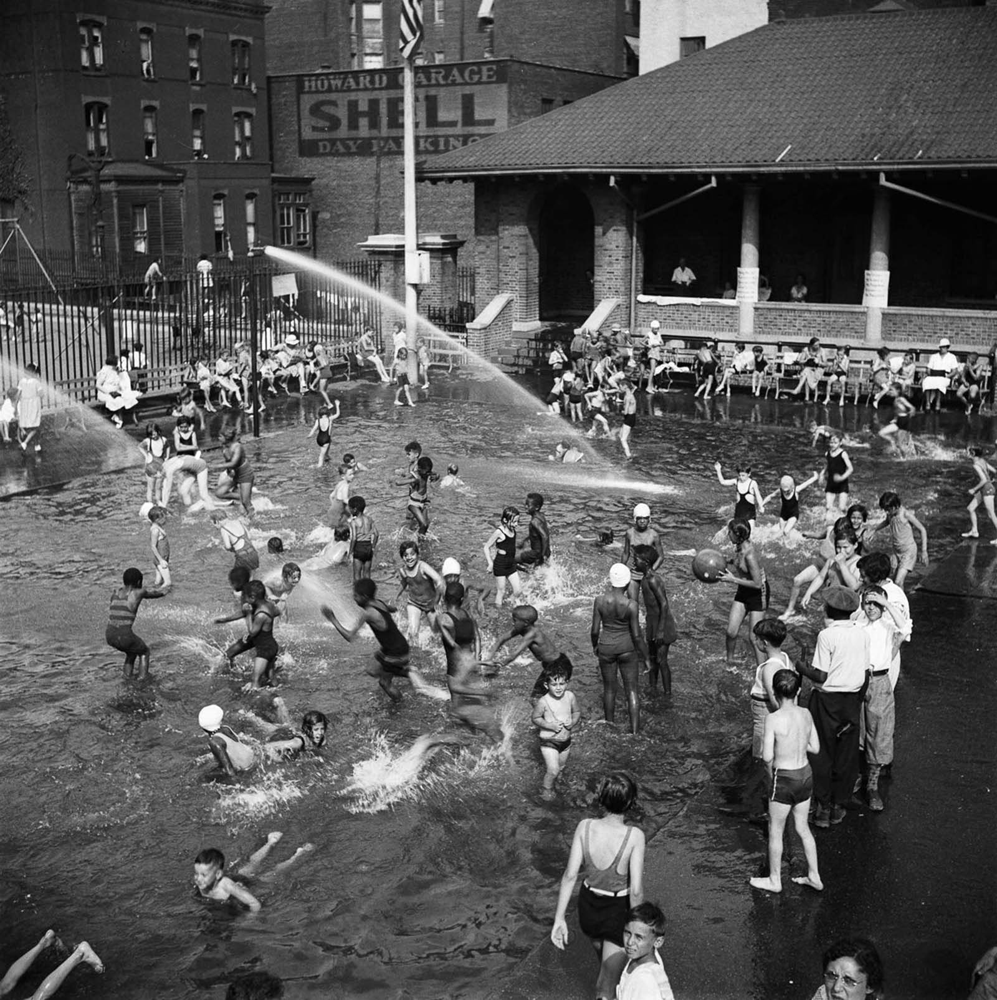
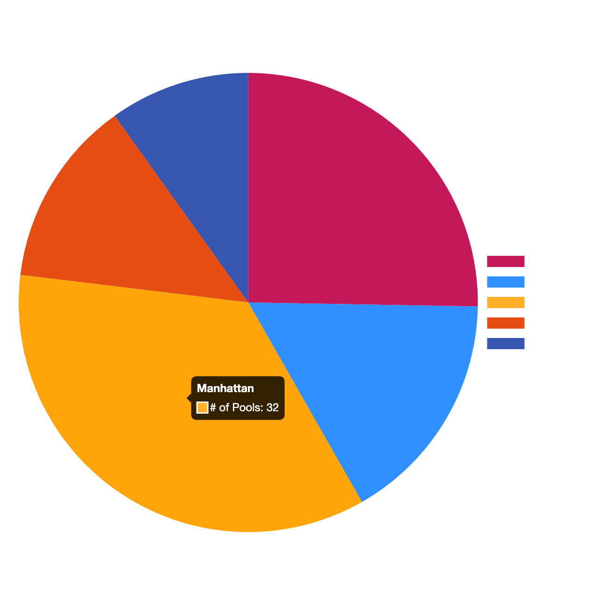

Welcome to Splash NYC, your ultimate guide to taking a dip in New York City's public pools! I've delved deep into the New York parks pools website to gather all the information you need to find the perfect pool match. Our site includes a refreshing map that will help you locate every pool in the city, as well as filtered pie charts that will help you narrow down your options with ease - no need to paddle around anymore! I've even created funky polygon shapes to give you a better idea of the size and shape of each pool. Whether you're a seasoned swimmer or a beginner, Splash NYC will help you make a big splash in your summer plans. So let's take a plunge and find your perfect pool match!
New York City has a rich history when it comes to public swimming pools. In the early 1900s, the city began building massive, ornate "natatoriums" to help residents cool off during the hot summer months. These grand pools featured everything from high dive platforms to artificial beaches and attracted thousands of swimmers each day. However, as the years went on, the city shifted away from these grand natatoriums and began building smaller, more neighborhood-centric pools. Today, New York City's public pool system is made up of three types of pools: outdoor, indoor, and mini pools. The city's outdoor pools, which can be found in parks across the five boroughs, are the most popular and are free to use. The indoor pools are typically found in recreation centers and require a membership or daily fee, while the mini pools are designed for children and can be found in some of the city's smaller parks. Despite the changes over the years, the public pool system remains an important resource for New Yorkers looking to beat the heat and enjoy some fun in the sun.
POOL TYPES
Olympic Pools
A standard Olympic-sized pool is 50 meters long and 25 meters wide. Any City pool that is this size or larger is considered an Olympic pool.

Intermediate Pools
Intermediate pools are smaller than Olympic pools. They are usually 3 1/2 to 4 feet deep. They include all City pools that do not fit into the other categories.
Mini Pools
Mini-pools are 40 feet long, 20 feet wide, and 3 to 3 1/4 feet deep. These pools are usually located in playgrounds. They are meant to be used by children age 16 and under.

Wading Pools
Wading pools are not stand-alone facilities. They are located next to either an Olympic or Intermediate pool. They vary in size but are usually not more than 2 feet deep.

Diving Pools
Pools with a diving board, and at least … feet deep.
SINCE COVID
Like many public spaces, New York City's public pools were affected by the COVID-19 pandemic. In 2020, all outdoor public pools were closed for the entire season, while indoor pools remained closed until late August. In 2021, however, the city was able to open its outdoor public pools with new health and safety measures in place. These measures include reduced capacity, mandatory face coverings, and enhanced cleaning and disinfection protocols. Additionally, all swimmers are required to follow social distancing guidelines, and locker rooms remain closed. While the experience of visiting a public pool may look a bit different now, the city is committed to providing a safe and enjoyable experience for all New Yorkers looking to take a refreshing swim during the hot summer months.
POOL BY SHAPE
NYC Parks pools in the form of polygon shapes
PIES
How many pools are in Queens? How many diving pools are there in NYC? Are there more indoor or outdoor pools?
